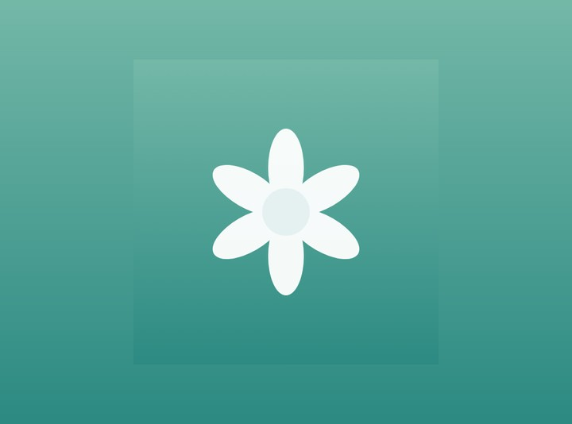
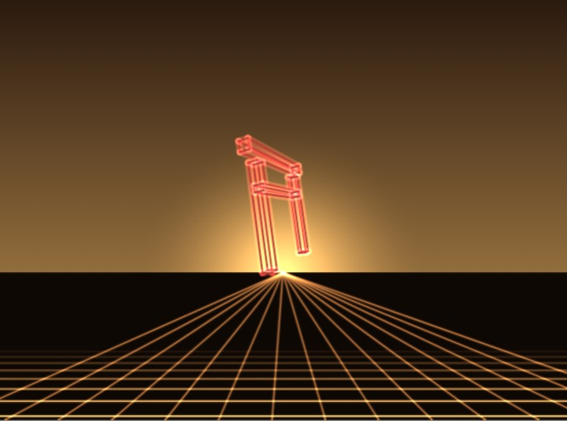
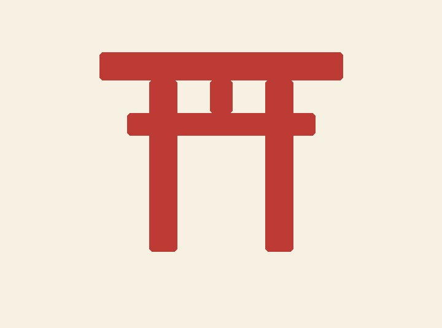

Diseño y construyo herramientas simples, que hacen una cosa bien.
Soy raku, desarrollador y diseñador autodidacta. Acá viven mis proyectos y la bitácora de lo que voy aprendiendo en el camino.
Proyectos destacados

Pilates Base
Gestión de un estudio de pilates: alumnos, rutinas y una biblioteca de 328 ejercicios. Next.js, SQLite y Docker.
demo en vivo — tarda ~1 min en despertar
waveforge
Motor GPU de visuales audio-reactivos en Python: patrones, capas y escenas que se combinan en vivo.
motor propio — código abierto en GitHub
Este sitio y sus apps
Cuatro herramientas hechas a mano con los fundamentos de la web: HTML, CSS y JavaScript. Carga instantánea, código abierto.
ver el código en GitHub